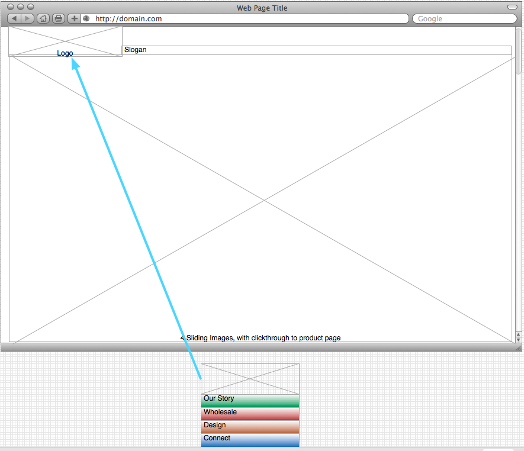
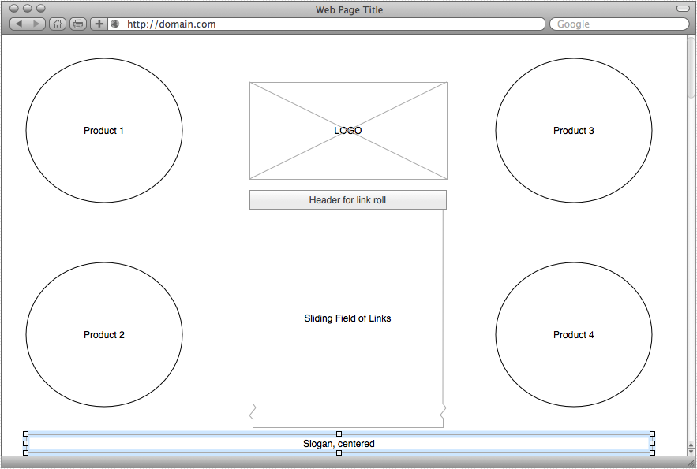
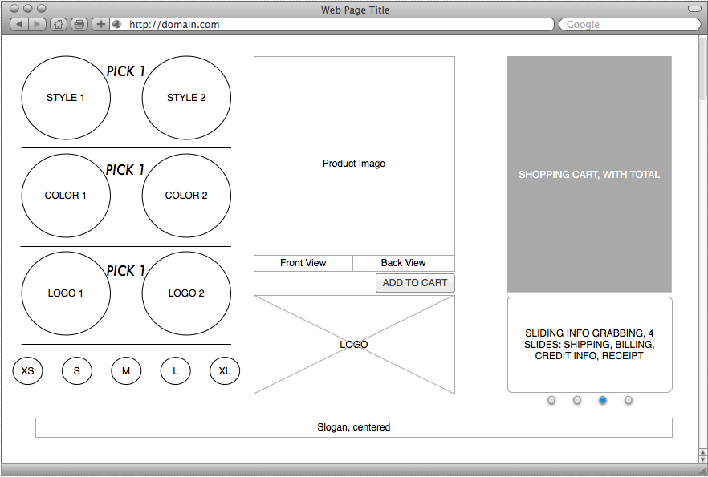
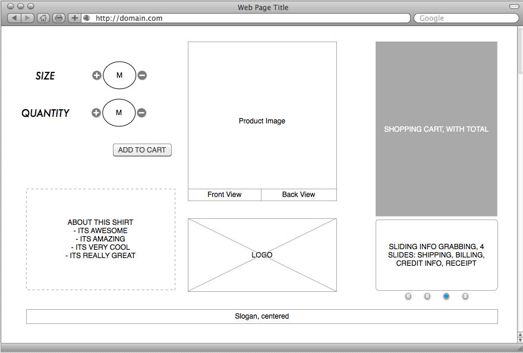

Which two websites are you most inspired by?
RelayFoods.com & NoMoreSnooze.com
How do they exhibit effective use of space, size or balance?
RelayFoods.com is an online grocery and farmers’ market. Therefore its goals are to present products in an attention grabbing way to entice purchase. Additionally, it is important to categorize and make finding what you need simple, simpler than finding these items in a grocery store. They use a simple header to enable key items (delivery info and search feature) to always be present. Additionally, there are other sortable ways to find your products with a quick scroll. The use of an odd number of products across allows edges and center to gain focus over the middle 2 items which leverage certain products. Some benefits that would come with reexamination would be product placement, increasing clicks and purchases, communicating benefits to customers, etc.
NoMoreSnooze.com reaffirms you as an enemy of the snooze button, then empowers you to destroy it. Then it guides you to become passionate for good sleep, and advocate. Finally it presents the solution to your problem, with a device to buy. The pictures, graphics and unique scrolling guide you through exactly the path they want you to take. Some benefits that would come with reexamination would be more effective clickthrough, faster customer acquisition, and a more trusting customer experience.
What makes them similar and different?
Similarities
- Similar use of soft colors in green and blue tones, soft and welcoming.
- Softer images and fonts, no sharp corners, very thin text.
- Uses screen width to portray space, enhance the feeling of calm space as opposed to tight and crowded.
Differences
- With Relay Foods you have control, many places to go and many options to scroll through and with NoMoreNooze you are totally guided to the point.
- NoMoreSnooze has the interactive feature where you click to destroy something, the site generally puts you in the the proper mindset while RelayFoods presents different paths for you to take depending on your mindset.
- One focuses only 1 image per page where the other has multiple per page.
Thumbnail Sketches
- Homepage 1
- 
- Description - Homepage 1 is an idea for the homepage of a t-shirt sales website. The headers and footers are self explanatory, with the logo dropping down to offer links to other pages of the website which offer more information. I do not have renderings for those pages yet.
- Focal Point - The focal point takes up 90% of page space, and these will be high quality imagery of people wearing the t-shirts. Becasue it takes up most of the space, the focal point is obvious, and the purpose of the site becomes clear. Additionally, the 2nd larges attention grabber due to its size and color is the logo, which leads the user to finding more information if desired.
- Hierarchy - By establishing the imagery of multiple people wearing the same t-shirts, the purpose of the site is clear. Moving more information to be smaller, or even beneath the main imagery desmonstrates that info is additional, t-shirts are primary.
- Balance - I built all the pages to absorb the entire screen of the user, without need for scrolling. This strategy should encourage engagement though clicking, and is a strategy I stole from the NoMoreSnooze website discussed above.
- Homepage 2
- 
- Description - Homepage 2 is an alternative way to welcome users to the website. The site is again serving the same purpose, which is to sell t-shirts.
- Focal Point - The focal point on this page is shared between the logo and the product images, adding some depth and does a better job connecting brand to product. Also there is more quick visitor engagement by having a scroll of links. This can provide more information quickly, or simply be a news feed that is used to establish brand and lifestyle concept associated with product. This site on one hand directs customers to purchase more quickly, but also encourages user to leave the site and visit others.
- Hierarchy - Because of size, and the logo placement above the scrolling feed, the hirearchy clearly demonstrates what is important ot the site.
- Balance - Using the entire screen, left to right and top to bottom encourages balance amongst the aspects of the site. The slogan as a footer underlines and connects the product images with the link feed, to promote uniformity between the two differenct concepts.
- Product Page 1
- 
- Description - This is what a product page looks like connected to Homepage 1. Because Homepage 1 offers larger images of various messages, they all link to this page. In this page the user can custom build a t-shirt, using our color, logo, and style options.
- Focal Point - Center, top is a rendering of the t-shirt so the customer can view what their selections are building during the customization process. Placing the image at center focuses the attention toward the product they are going to buy, with all information being there they get to check out without losing site of their finished visual image.
- Hierarchy - Aligning the shirt design aspects promotes flow, we want the customer to begin with the blank canvas, and move down through to size. Going top to bottom promotes flow in the proper order, but also allows a quick go back. Additionally, when we use a sliding scale to check out of the cart forces the customer to imput information in the order we want them to put it in. For example, shipping address before final price.
- Balance - the left(design) grabs more attention than the right(shopping cart) but the whole thing is balanced well with the slogan footer bringing balance to both sides of the page.
- Product Page 2
- 
- Description - This is the product page connected to home page 2. Because home page 2 asks the user to select their shirt design initially, the only thing needed to be answered is size and quantity before checkout.
- Focal Point - Again the focal point is an image of the final product. With multiple view options assisting with building excitement for final product.
- Hierarchy - As we read left to right and top to bottom, this pages encourages selection of size first, moves customers eyes to image, and then to shopping cart. If the customer's eyes leave the shopping cart then they move to somewhere else on the page, the flow directs them to non-visual information on the quality of the product and benefits.
- Balance - There is no "dead space" on this page, and each object has a purpose with its importance being propotionate to size.